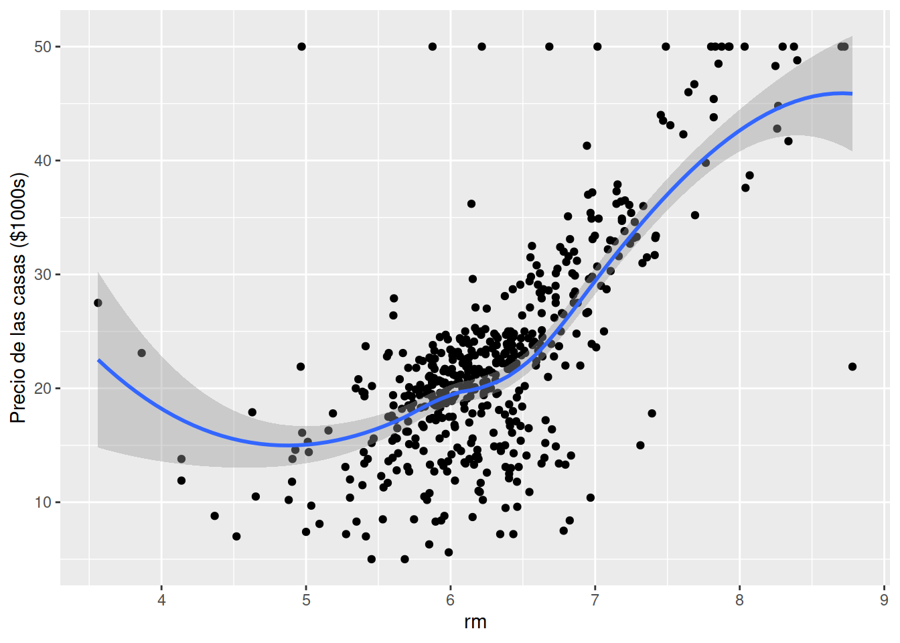
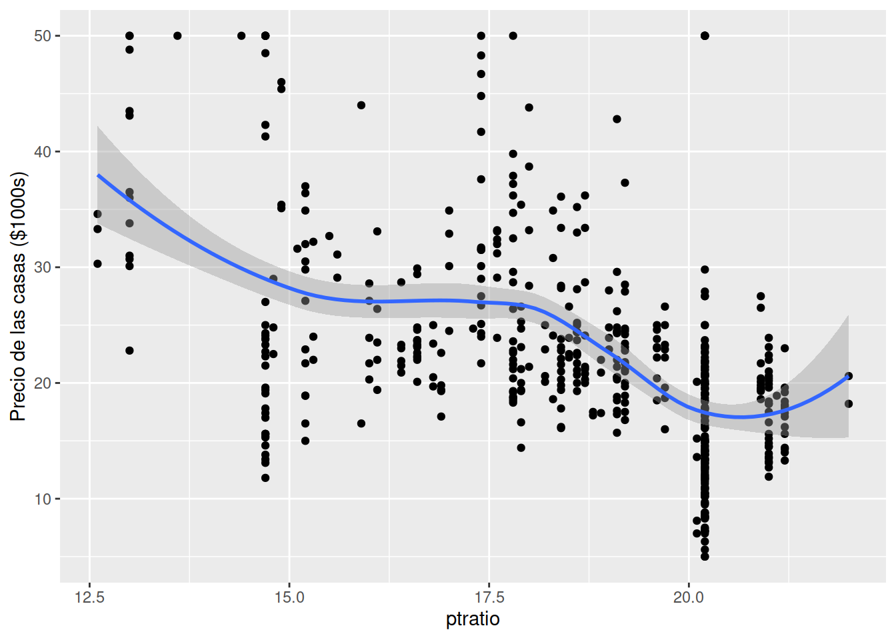
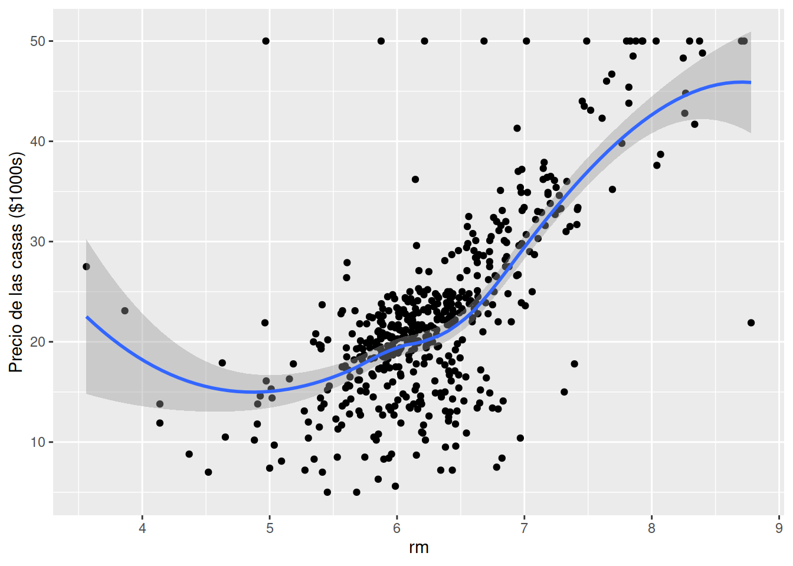
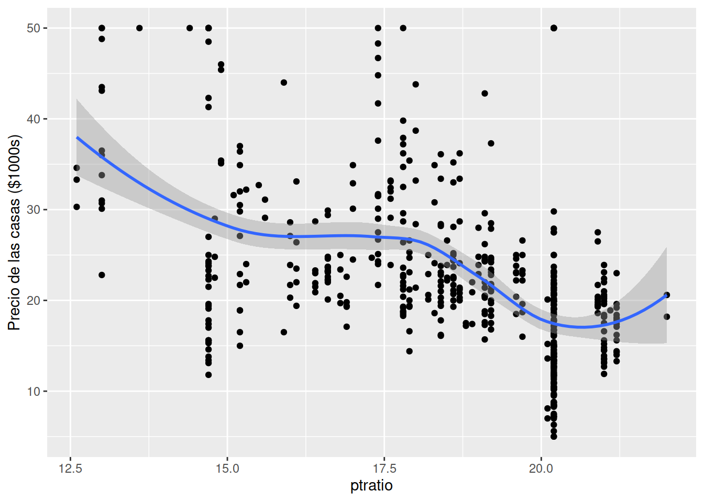

Predicción de precios de las casas en Boston
Pedro Albarran
Universidad de Alicante, Curso 2020/21
# Opciones por defecto para los fragmentos de código
knitr::opts_chunk$set(eval = TRUE, echo = TRUE,
warning = FALSE, message = FALSE,
results = "hide", fig.show="hide")
# se muestra y evalúa el código,
# no se muestran mensajes, ni avisos (warnings)
# no se muestran los resultados de código (tampoco gráficos)
# en los códigos que considere necesarios los mostraré
# Elimino todo del Entorno (del documento)
rm(list = ls())
# Cargo todas las bibliotecas necesarias
# (se podría hacer cuando cada una sea necesaria)
library("tidyverse")
library("tidymodels")
library("printr")
library("skimr")
library("dlookr")
library("broom")
library("kableExtra")
library("rpart.plot")
library("vip")
#fijo el directorio de trabajo
#setwd("/home/albarran/Dropbox/MAD/00.TEC")1 Introducción
1.1 Comentario General
Este documento debe entenderse como un ejemplo, no la guía o la receta única de hacer las cosas. Cada conjunto de datos es diferente y requiere un tratamiento distinto. Con los mismos datos se pueden hacer distintos análisis. Cada uno puede realizar distintos tratamientos de los datos, distintos modelos (usar regresión lineal, árboles, etc.), diferentes especificaciones (incluir distintas combinaciones de variables y transformadas de manera diferente), etc. Por eso existen “hackatones” o competiciones para ver quién predice mejor con los mismos datos: si existiera una receta, ganaría un ordenador.
Además en este ejemplo no se entran en muchos detalles en algunas cuestiones de las fases del trabajo: características de los datos, procedimientos, tablas con encabezados adecuados, gráficos con ejes correctamente nombrados, comentario de resultados, etc. Tampoco se pretende que vuestros trabajos sean excesivamente detallados, pero sí algo más de lo que se discute aquí. Sin embargo, este ejemplo tiene probablemente muchos más gráficos y tablas de los que vosotros debéis reportar y se han probado muchas más cosas para ofrecer como ejemplo de los que vosotros tendréis que hacer.
Por otro lado, he incluido la opción de que se muestre o se oculte el código de todo lo que he hecho. Esto es solo por cuestiones didácticas. No tenéis porque hacerlo igual y, de hecho, debéis pensar qué y cuándo queréis mostrar algo.
1.2 Introducción y Objetivos
En este trabajo, se analizará un conjunto de datos con información sobre precios y otros atributos de una muestra de viviendas en Boston. Por un lado, el objetivo es examinar la influencia de varios atributos del vecindario en los precios de la vivienda, en un intento por descubrir las variables explicativas más adecuadas. Por otro lado, la construcción de un modelo de predicción permitirá determinar el valor por el que se puede poner en el mercado una vivienda o detectar si alguna está infravalorada o sobrevalorada dadas sus características.
Para realizar este análisis se utilizará el lenguaje de programación R.
2 Datos
En este trabajo vamos a utilizar un conjunto de datos, “The Boston Housing Price”, derivados de la información recopilada por el Servicio de Censos de los Estados Unidos sobre las viviendas en el área de Boston (Massachusetts). Podemos encontrar algunos detalles adicionales sobre estos datos aquí. Los datos pueden obtenerse desde esa misma página, pero por sencillez los leemos en formato de valores separados por comas (CSV) desde aquí.
Boston <- read_csv("https://raw.githubusercontent.com/selva86/datasets/master/BostonHousing.csv")Los datos tienen 506 observaciones y 14 variables. (NOTA: esta información se ha incluido usando el código de R en línea “r dim(Boston)[1]” y “r dim(Boston)[2]”) y también se puede obtener con el siguiente código; NO está claro que queráis mostrar este código.)
dim(Boston)[1] 506 14
Una descripción completa los atributos disponibles puede encontrarse en Apéndice A. Estos datos fueron originalmente utilizados en un estudio sobre el impacto de la contaminación del aire (utilizando las concentraciones de óxido de nitrógeno). En este trabajo, consideramos el efecto de otras características de la zona donde se encuentra la casa como la proximidad al río Charles, la distancia a los principales centros de empleo, la calidad de las escuelas (medida por la el número de alumnos por maestro) y los niveles de delincuencia. Nuestra variable de interés para predecir es el valor mediano del precio de la vivienda en mil dólares (denotado por MEDV). Notad que nos centramos en las viviendas ocupadas por sus propietarios, es decir, consideramos que el valor de las casas destinadas al alquiler se determina según un proceso diferente.
3 Exploración Inicial
Debemos considerar si los datos están listos para trabajar o requieren algún tipo de limpieza, ordenación o transformación. En primer lugar, comprobamos si el tipo de datos de cada variable es el adecuado. En este caso, todas las variables son numéricas, lo cual se corresponde con la información cuantitativa de la mayoría de ellas. La variable que nos dice si la zona de la casa está cerca del río es una variable binaria, es decir, aporta información cualitativa. En este caso, no es crucial convertirla en un factor (en los modelos y para otras cuestiones, convertimos los factores en variables binarias). En otros casos, podemos necesitar convertir más variables con información cualitativa a factores o eliminar variables de tipo carácter o con información que no podamos procesar. NOTA: para esto habremos comprobado el tipo de cada variable, habremos mirado los valores y contrastado con la información que según su descripción debería tener. Utilizaríamos un código como el siguiente, aunque probablemente NO queráis incluir en el documento ni lo uno ni lo otro.
glimpse(Boston)## Rows: 506
## Columns: 14
## $ crim <dbl> 0.00632, 0.02731, 0.02729, 0.03237, 0.06905, 0.02985, 0.08829, 0.144…
## $ zn <dbl> 18.0, 0.0, 0.0, 0.0, 0.0, 0.0, 12.5, 12.5, 12.5, 12.5, 12.5, 12.5, 1…
## $ indus <dbl> 2.31, 7.07, 7.07, 2.18, 2.18, 2.18, 7.87, 7.87, 7.87, 7.87, 7.87, 7.…
## $ chas <dbl> 0, 0, 0, 0, 0, 0, 0, 0, 0, 0, 0, 0, 0, 0, 0, 0, 0, 0, 0, 0, 0, 0, 0,…
## $ nox <dbl> 0.538, 0.469, 0.469, 0.458, 0.458, 0.458, 0.524, 0.524, 0.524, 0.524…
## $ rm <dbl> 6.575, 6.421, 7.185, 6.998, 7.147, 6.430, 6.012, 6.172, 5.631, 6.004…
## $ age <dbl> 65.2, 78.9, 61.1, 45.8, 54.2, 58.7, 66.6, 96.1, 100.0, 85.9, 94.3, 8…
## $ dis <dbl> 4.0900, 4.9671, 4.9671, 6.0622, 6.0622, 6.0622, 5.5605, 5.9505, 6.08…
## $ rad <dbl> 1, 2, 2, 3, 3, 3, 5, 5, 5, 5, 5, 5, 5, 4, 4, 4, 4, 4, 4, 4, 4, 4, 4,…
## $ tax <dbl> 296, 242, 242, 222, 222, 222, 311, 311, 311, 311, 311, 311, 311, 307…
## $ ptratio <dbl> 15.3, 17.8, 17.8, 18.7, 18.7, 18.7, 15.2, 15.2, 15.2, 15.2, 15.2, 15…
## $ b <dbl> 396.90, 396.90, 392.83, 394.63, 396.90, 394.12, 395.60, 396.90, 386.…
## $ lstat <dbl> 4.98, 9.14, 4.03, 2.94, 5.33, 5.21, 12.43, 19.15, 29.93, 17.10, 20.4…
## $ medv <dbl> 24.0, 21.6, 34.7, 33.4, 36.2, 28.7, 22.9, 27.1, 16.5, 18.9, 15.0, 18…head(Boston) %>% kbl() %>% kable_paper("hover")| crim | zn | indus | chas | nox | rm | age | dis | rad | tax | ptratio | b | lstat | medv |
|---|---|---|---|---|---|---|---|---|---|---|---|---|---|
| 0.00632 | 18 | 2.31 | 0 | 0.538 | 6.575 | 65.2 | 4.0900 | 1 | 296 | 15.3 | 396.90 | 4.98 | 24.0 |
| 0.02731 | 0 | 7.07 | 0 | 0.469 | 6.421 | 78.9 | 4.9671 | 2 | 242 | 17.8 | 396.90 | 9.14 | 21.6 |
| 0.02729 | 0 | 7.07 | 0 | 0.469 | 7.185 | 61.1 | 4.9671 | 2 | 242 | 17.8 | 392.83 | 4.03 | 34.7 |
| 0.03237 | 0 | 2.18 | 0 | 0.458 | 6.998 | 45.8 | 6.0622 | 3 | 222 | 18.7 | 394.63 | 2.94 | 33.4 |
| 0.06905 | 0 | 2.18 | 0 | 0.458 | 7.147 | 54.2 | 6.0622 | 3 | 222 | 18.7 | 396.90 | 5.33 | 36.2 |
| 0.02985 | 0 | 2.18 | 0 | 0.458 | 6.430 | 58.7 | 6.0622 | 3 | 222 | 18.7 | 394.12 | 5.21 | 28.7 |
Boston$chas <- factor(Boston$chas,
levels=c(0,1), labels = c("No", "Yes"))4 Análisis Exploratorio y Visualización de los datos
La siguiente fase consiste en analizar la distribución de valores de cada variable (análisis de variación) y las posibles relaciones entre ellas (análisis de covariación). Esto nos puede llevar a realizar limpieza adicional de los datos (en particular, relacionada con valores ausentes y puede que atípicos) o transformaciones de los datos (como tomar logaritmos o discretizar alguna variable). También podemos encontrar características de los datos que sean de interés por sí mismas como para especificar los modelos. Para este análisis nos podemos ayudar en librerías que realizan algunas de las tareas de forma automatizada. PERO recordad que NO queremos en general mostrar la salida directa de estos paquetes, sino que la utilizaremos para aprender nosotros y luego mostrar aquello que consideremos más interesante.
Por ejemplo, usando la biblioteca skimr podemos ver
skim(Boston)| Name | Boston |
| Number of rows | 506 |
| Number of columns | 14 |
| _______________________ | |
| Column type frequency: | |
| factor | 1 |
| numeric | 13 |
| ________________________ | |
| Group variables | None |
Variable type: factor
| skim_variable | n_missing | complete_rate | ordered | n_unique | top_counts |
|---|---|---|---|---|---|
| chas | 0 | 1 | FALSE | 2 | No: 471, Yes: 35 |
Variable type: numeric
| skim_variable | n_missing | complete_rate | mean | sd | p0 | p25 | p50 | p75 | p100 | hist |
|---|---|---|---|---|---|---|---|---|---|---|
| crim | 0 | 1 | 3.61 | 8.60 | 0.01 | 0.08 | 0.26 | 3.68 | 88.98 | ▇▁▁▁▁ |
| zn | 0 | 1 | 11.36 | 23.32 | 0.00 | 0.00 | 0.00 | 12.50 | 100.00 | ▇▁▁▁▁ |
| indus | 0 | 1 | 11.14 | 6.86 | 0.46 | 5.19 | 9.69 | 18.10 | 27.74 | ▇▆▁▇▁ |
| nox | 0 | 1 | 0.55 | 0.12 | 0.38 | 0.45 | 0.54 | 0.62 | 0.87 | ▇▇▆▅▁ |
| rm | 0 | 1 | 6.28 | 0.70 | 3.56 | 5.89 | 6.21 | 6.62 | 8.78 | ▁▂▇▂▁ |
| age | 0 | 1 | 68.57 | 28.15 | 2.90 | 45.02 | 77.50 | 94.07 | 100.00 | ▂▂▂▃▇ |
| dis | 0 | 1 | 3.80 | 2.11 | 1.13 | 2.10 | 3.21 | 5.19 | 12.13 | ▇▅▂▁▁ |
| rad | 0 | 1 | 9.55 | 8.71 | 1.00 | 4.00 | 5.00 | 24.00 | 24.00 | ▇▂▁▁▃ |
| tax | 0 | 1 | 408.24 | 168.54 | 187.00 | 279.00 | 330.00 | 666.00 | 711.00 | ▇▇▃▁▇ |
| ptratio | 0 | 1 | 18.46 | 2.16 | 12.60 | 17.40 | 19.05 | 20.20 | 22.00 | ▁▃▅▅▇ |
| b | 0 | 1 | 356.67 | 91.29 | 0.32 | 375.38 | 391.44 | 396.22 | 396.90 | ▁▁▁▁▇ |
| lstat | 0 | 1 | 12.65 | 7.14 | 1.73 | 6.95 | 11.36 | 16.96 | 37.97 | ▇▇▅▂▁ |
| medv | 0 | 1 | 22.53 | 9.20 | 5.00 | 17.02 | 21.20 | 25.00 | 50.00 | ▂▇▅▁▁ |
o usando dlookr
Boston %>%
describe() %>%
select(variable:kurtosis) %>%
kbl(digits = 2) %>% kable_paper("hover")| variable | n | na | mean | sd | se_mean | IQR | skewness | kurtosis |
|---|---|---|---|---|---|---|---|---|
| crim | 506 | 0 | 3.61 | 8.60 | 0.38 | 3.60 | 5.22 | 37.13 |
| zn | 506 | 0 | 11.36 | 23.32 | 1.04 | 12.50 | 2.23 | 4.03 |
| indus | 506 | 0 | 11.14 | 6.86 | 0.30 | 12.91 | 0.30 | -1.23 |
| nox | 506 | 0 | 0.55 | 0.12 | 0.01 | 0.17 | 0.73 | -0.06 |
| rm | 506 | 0 | 6.28 | 0.70 | 0.03 | 0.74 | 0.40 | 1.89 |
| age | 506 | 0 | 68.57 | 28.15 | 1.25 | 49.05 | -0.60 | -0.97 |
| dis | 506 | 0 | 3.80 | 2.11 | 0.09 | 3.09 | 1.01 | 0.49 |
| rad | 506 | 0 | 9.55 | 8.71 | 0.39 | 20.00 | 1.00 | -0.87 |
| tax | 506 | 0 | 408.24 | 168.54 | 7.49 | 387.00 | 0.67 | -1.14 |
| ptratio | 506 | 0 | 18.46 | 2.16 | 0.10 | 2.80 | -0.80 | -0.29 |
| b | 506 | 0 | 356.67 | 91.29 | 4.06 | 20.85 | -2.89 | 7.23 |
| lstat | 506 | 0 | 12.65 | 7.14 | 0.32 | 10.01 | 0.91 | 0.49 |
| medv | 506 | 0 | 22.53 | 9.20 | 0.41 | 7.98 | 1.11 | 1.50 |
Boston %>%
describe() %>%
select(variable, p00:p100) %>%
kbl(digits = 2) %>% kable_paper("hover")| variable | p00 | p01 | p05 | p10 | p20 | p25 | p30 | p40 | p50 | p60 | p70 | p75 | p80 | p90 | p95 | p99 | p100 |
|---|---|---|---|---|---|---|---|---|---|---|---|---|---|---|---|---|---|
| crim | 0.01 | 0.01 | 0.03 | 0.04 | 0.06 | 0.08 | 0.10 | 0.15 | 0.26 | 0.55 | 1.73 | 3.68 | 5.58 | 10.75 | 15.79 | 41.37 | 88.98 |
| zn | 0.00 | 0.00 | 0.00 | 0.00 | 0.00 | 0.00 | 0.00 | 0.00 | 0.00 | 0.00 | 0.00 | 12.50 | 20.00 | 42.50 | 80.00 | 90.00 | 100.00 |
| indus | 0.46 | 1.25 | 2.18 | 2.91 | 4.39 | 5.19 | 5.96 | 7.38 | 9.69 | 12.83 | 18.10 | 18.10 | 18.10 | 19.58 | 21.89 | 25.65 | 27.74 |
| nox | 0.38 | 0.40 | 0.41 | 0.43 | 0.44 | 0.45 | 0.47 | 0.51 | 0.54 | 0.58 | 0.60 | 0.62 | 0.67 | 0.71 | 0.74 | 0.87 | 0.87 |
| rm | 3.56 | 4.52 | 5.31 | 5.59 | 5.84 | 5.89 | 5.95 | 6.09 | 6.21 | 6.38 | 6.50 | 6.62 | 6.75 | 7.15 | 7.59 | 8.33 | 8.78 |
| age | 2.90 | 6.61 | 17.72 | 26.95 | 37.80 | 45.02 | 52.40 | 65.40 | 77.50 | 85.90 | 91.80 | 94.07 | 95.60 | 98.80 | 100.00 | 100.00 | 100.00 |
| dis | 1.13 | 1.21 | 1.46 | 1.63 | 1.95 | 2.10 | 2.26 | 2.64 | 3.21 | 3.88 | 4.54 | 5.19 | 5.62 | 6.82 | 7.83 | 9.22 | 12.13 |
| rad | 1.00 | 1.00 | 2.00 | 3.00 | 4.00 | 4.00 | 4.00 | 5.00 | 5.00 | 5.00 | 8.00 | 24.00 | 24.00 | 24.00 | 24.00 | 24.00 | 24.00 |
| tax | 187.00 | 188.00 | 222.00 | 233.00 | 273.00 | 279.00 | 289.00 | 307.00 | 330.00 | 398.00 | 437.00 | 666.00 | 666.00 | 666.00 | 666.00 | 666.00 | 711.00 |
| ptratio | 12.60 | 13.00 | 14.70 | 14.75 | 16.60 | 17.40 | 17.80 | 18.40 | 19.05 | 19.70 | 20.20 | 20.20 | 20.20 | 20.90 | 21.00 | 21.20 | 22.00 |
| b | 0.32 | 6.73 | 84.59 | 290.27 | 364.31 | 375.38 | 378.66 | 387.97 | 391.44 | 393.53 | 395.47 | 396.22 | 396.90 | 396.90 | 396.90 | 396.90 | 396.90 |
| lstat | 1.73 | 2.88 | 3.71 | 4.68 | 6.29 | 6.95 | 7.77 | 9.53 | 11.36 | 13.33 | 15.62 | 16.96 | 18.06 | 23.04 | 26.81 | 33.92 | 37.97 |
| medv | 5.00 | 7.01 | 10.20 | 12.75 | 15.30 | 17.02 | 18.20 | 19.70 | 21.20 | 22.70 | 24.15 | 25.00 | 28.20 | 34.80 | 43.40 | 50.00 | 50.00 |
4.1 Análisis de variación
Como primer elemento a destacar, estos datos no contiene valores ausentes en ninguna de las variables. En caso contrario, deberíamos identificar cuántas observaciones y qué variables están afectadas. Sabemos que podemos posponer la imputación de valores a una fase posterior (como un paso del pre-procesado antes de estimar un modelo), pero es conveniente tener una visión general y pensar si algunas observaciones probablemente serán descartadas (si tienen muchos valores ausentes y sobre todo afectan a la variable dependiente).
Podemos centrarnos en describir con más detalles algunas distribuciones. Esto nuevamente es un EJEMPLO dependiendo de las variables que tengamos y de qué observemos. En general, caracterizar la variable dependiente suele ser una buena idea. Visualizamos la distribución y densidad del precio mediano de las viviendas. La curva negra representa la densidad. Vemos que el valor medio del precio de la vivienda está sesgado a la derecha. Es decir, observamos precios muy altos con una frecuencia mayor de la esperada en una distribución simétrica donde existiría la misma proporción por encima y debajo de la media.
Boston %>% ggplot(aes(x=medv)) + geom_histogram(aes(y=..density..))+ geom_density() + ggtitle("Distribución del Precio") + xlab("Precio de las casas") + ylab("Densidad")Figura 1. Distribución del precio de la vivienda
Dada esta asimetría, quizás debamos considerar modelizar posteriormente esta variable transformada en logaritmos. La razón: se aprecia un comportamiento que puede modelizarse mejor de forma no lineal. También se puede nota una acumulación de valores en 50 mil dólares (Se puede observar en los resultados de describe() que ese valor exacto se repite varias veces, NO es producto de la discretización del gráfico en la que se acumulan varios valores diferentes en un intervalo en torno a 50).
También podemos representar gráficamente o en un tabla la única variable categórica que tenemos. La conclusión no es particularmente interesante: solo unas pocas zonas de la ciudad están cerca del río.
Boston %>% count(chas) %>%
mutate(freq=n/sum(n)) %>%
kbl(col.names=c("Casa cercana al río","Número de casos", "Frecuencia"),
caption = "Tabla 1. Distribución de Casas según cercanía al río") %>% kable_paper("hover")| Casa cercana al río | Número de casos | Frecuencia |
|---|---|---|
| No | 471 | 0.93083 |
| Yes | 35 | 0.06917 |
En el caso de variables binarias las podemos representar de varias maneras: como una distribución o con una sola barra (NOTA: los gráficos siguientes son redundantes en esta caso, con uno de ellos sería más que suficiente en caso de considerar relevante esta información.)
Boston %>% ggplot() + geom_bar(aes(x=chas)) + xlab("Zona cercana al río") +ylab("Número de casos")
Boston %>% ggplot() + geom_bar(aes(x="",fill=chas)) + labs(fill="Zona cercana al río") +ylab("Número de casos")Figura 2. Distribución de la cercanía al río
También podemos mostrar algunas otras características interesantes mediante gráficos y/o tablas de estadísticos descriptivos. Algunas variables como el número de habitaciones tienen distribuciones bastante simétricas. Mientras que otras, como la edad o el porcentaje de población desfavorecida muestran claras asimetrías: hay una alta concentración de casas “viejas” y de zonas no desfavorecidas. NOTA: Recordad que habría que probar varios anchos de intervalos (binwidth) para asegurarnos de entender la forma de la distribución. También debéis poner nombres suficientemente descriptivos e informativos a los gráficos, los ejes, la leyenda, etc. (Quizás no es el caso en algunos de los que presento aquí).
Boston %>% ggplot(aes(x=age)) + geom_histogram(aes(y=..density..))+ geom_density() + xlab("Edad") + ylab("Densidad")
Boston %>% ggplot(aes(x=lstat)) + geom_histogram(aes(y=..density..))+ geom_density() + xlab("Porcentaje de población desfavorecida") + ylab("Densidad")Figura 3. Distribuciones
Notad que en la variable edad nuevamente hay una concentración de valores en 100; en la salida describe() mostrada anteriormente, se aprecia mejor que ese valor exacto está en los datos originales, no resulta de que se agrupen valores en el gráfico.
El caso de la distancia a los centros de empleo es similar a las dos anteriores: una gran concentración en zonas bien conectadas, aunque una cola de zonas alejadas. Se podría omitir: no hay que mostrar gráficos o tablas de cada variable ni comentar necesariamente las características de la distribución de todas, solo de aquellas con rasgos interesante o relevantes.
Otra variable en principio relacionada, el índice de accesibilidad, muestra una distribución “poco continua”: además de un cúmulo de valores en la cola derecha, hay muchos huecos vacíos. Si probáis un transformación logarítmica, veréis que no cambia en esencia. Las variables con este forma en su distribución suelen ser candidatas a ser discretizadas.
Boston %>% ggplot(aes(x=dis)) + geom_histogram(aes(y=..density..))+ geom_density() + xlab("Distancia a centro de trabajo") + ylab("Densidad")
Boston %>% ggplot(aes(x=rad)) + geom_histogram(aes(y=..density..))+ geom_density() + xlab("Índice de accesibilidad") + ylab("Densidad")Figura 4. Distribuciones
Algunas variables tienen distribuciones con características poco reseñables: unas con valores distribuidos de forma relativamente homogénea, otras dispersas, con concentraciones en valores aislados en medio o en los extremos de la distribución, pero no aportan mucho información (se podrían omitir). En este caso, quizás se podría notar una concentración de zonas con altos impuestos, muy diferenciadas del resto.
Boston %>% ggplot(aes(x=nox)) + geom_histogram(aes(y=..density..))+ geom_density() + xlab("Concentración de óxidos nítricos") + ylab("Densidad")
Boston %>% ggplot(aes(x=ptratio)) + geom_histogram(aes(y=..density..))+ geom_density() + xlab("Ratio de alumnos por profesor") + ylab("Densidad")
Boston %>% ggplot(aes(x=tax)) + geom_histogram(aes(y=..density..))+ geom_density() + xlab("Impuesto de la propiedad") + ylab("Densidad")
Figura 5. Distribuciones
Algo más interesantes son algunas variables que muestran polaridad en sus valores o una excesiva acumulación en algunos. Por ejemplo, la criminalidad y el porcentaje de población de color tienen distribuciones muy asimétricas y, en el segundo caso, persiste incluso tras transformar en logaritmos.
Boston %>% ggplot(aes(x=crim)) + geom_histogram(aes(y=..density..))+ geom_density() + xlab("Criminalidad") + ylab("Densidad")
Boston %>% ggplot(aes(x=crim)) + geom_histogram(aes(y=..density..))+ geom_density() + xlab("Criminalidad") + ylab("Densidad") + scale_x_log10()Figura 6a. Distribuciones
Boston %>% ggplot(aes(x=b)) + geom_histogram(aes(y=..density..))+ geom_density() + xlab("Población de color") + ylab("Densidad")
Boston %>% ggplot(aes(x=b)) + geom_histogram(aes(y=..density..))+ geom_density() + xlab("Población de color") + ylab("Densidad") + scale_x_log10()Figura 6b. Distribuciones
Estas variables y algunas otras anteriores son candidatas a ser discretizadas. La criminalidad, por ejemplo, no solo muestra una concentración en unos pocos valores, sino que una vez transformada en logaritmos se aprecian dos grupos diferenciados, como también pasaba con los impuestos. En el caso de la ratio de profesor/alumno también unos valores con gran concentración de frecuencia y muy pocos por encima de este por lo que podrían agruparse juntos. En el caso de la población de color, vemos que a partir del percentil 75, los valores son prácticamente iguales y antes del percentil 10 son mucho menores que en el resto de la distribución. En estos casos de variables con valores concentrados o infrecuentes y con saltos o huecos, no podemos decir que la variable que observamos en nuestra muestra tenga una apariencia de variable continua, aunque en principio lo sea. Por tanto, agrupar y discretizar es una buena opción. En particular, es más fácil identificar el efecto medio sobre el precio de la vivienda de un rango de valores (ej., zonas de baja criminalidad frente a alta) que el efecto de incrementar en un punto la variable (cuando en los datos no observamos valores con ese punto más). En otras palabras, vamos a modelizar efectos flexibles no lineales.
4.2 Análisis de covariación
Empezamos analizando la relación entre nuestra variable de interés y la única variable categórica que tenemos inicialmente, para lo que podríamos presentar alguna (NO todas) de las siguientes figuras
Boston %>% ggplot(aes(y = medv, x = chas)) + geom_boxplot() + ylab("Densidad") + xlab("Cerca del río") + ylab("Precio")
Boston %>% ggplot(aes(x = medv)) + geom_density(mapping = aes(colour = chas)) + xlab("Precio") + ylab("Densidad") + labs(color = "Cerca del río")Figura 7a. Distribución del precio por cercanía al rio
Boston %>% ggplot(aes(x = medv)) + geom_density() + facet_wrap(~chas) + ylab("Densidad") + xlab("Precio")Figura 7b. Distribución del precio, según cercanía al rio
Parece que las casa cercanas al río tienen un precio superior, aunque la diferencia no parece grande. Ambas distribuciones son asimétricas, aunque en el caso de casas cercanas al río la cola derecha no es tan larga. Mediante una regresión simple o calculando las medias podemos comprobar si existen diferencias en media y si son significativas:
lm(data = Boston, medv ~ chas) %>% broom::tidy() %>% kbl(digits = 2, caption = "Table 2a. Precio según cercanía al río") %>% kable_paper("hover")| term | estimate | std.error | statistic | p.value |
|---|---|---|---|---|
| (Intercept) | 22.09 | 0.42 | 52.9 | 0 |
| chasYes | 6.35 | 1.59 | 4.0 | 0 |
Boston %>% group_by(chas) %>% describe(medv) %>% select(variable:n, mean, se_mean) %>% kbl(digits = 2, caption = "Tabla 2b. Precio según cercanía al río") %>% kable_paper("hover")| variable | chas | n | mean | se_mean |
|---|---|---|---|---|
| medv | No | 471 | 22.09 | 0.41 |
| medv | Yes | 35 | 28.44 | 2.00 |
También podríamos analizar si la variable binaria de cercanía al río está relacionada. (NOTA: esto nuevamente es un código de ejemplo para hacer de forma fácil este proceso. NO es necesario que vosotros lo hagáis así.)
dif.rio <- function(var) {
formula <- paste0(var," ~ chas")
lm(data = Boston, formula) %>% tidy() %>% filter(term=="chasYes") %>% select(estimate, p.value)
}
vars <- c("crim", "zn", "indus", "nox", "rm", "age", "dis", "rad", "tax", "ptratio", "b", "lstat")
tabla <- vars %>% map_df(dif.rio)
bind_cols(Variable=vars, tabla) %>% kbl(digits = 2, caption = "Tabla 2c. Diferencias en variable por cercanía al río") %>% kable_paper("hover")| Variable | estimate | p.value |
|---|---|---|
| crim | -1.89 | 0.21 |
| zn | -3.92 | 0.34 |
| indus | 1.70 | 0.16 |
| nox | 0.04 | 0.04 |
| rm | 0.25 | 0.04 |
| age | 9.59 | 0.05 |
| dis | -0.82 | 0.03 |
| rad | -0.25 | 0.87 |
| tax | -23.61 | 0.42 |
| ptratio | -1.04 | 0.01 |
| b | 17.54 | 0.27 |
| lstat | -1.52 | 0.23 |
Vemos que las casas cercanas al rio son más antiguas, con más habitaciones, más cercanas al centro de trabajo, con más contaminación y mejores condiciones escolares.
A continuación podemos analizar rápidamente si las variables continuas están relacionadas con nuestra variable de interés, precio de la vivienda, y entre ellas. Lo podemos hacer mediante distintos análisis de correlación, en una tabla (excesivamente larga) o visualmente.
Boston %>% correlate() %>%
filter(as.integer(var1) > as.integer(var2)) %>%
kbl(digits = 2, caption = "Tabla 3. Correlaciones") %>% kable_paper("hover")Boston %>% plot_correlate()
Boston %>% mutate(logmedv=log(medv)) %>% select(-medv) %>% plot_correlate() 
Figura 8. Correlaciones entre variables continuas
Hemos considerado la correlación tanto con el precio como con su logaritmo, dado lo discutido anteriormente. Sin embargo, apenas se aprecian diferencias.
Vemos que existe una fuerte correlación (positiva o negativa) entre el precio y varias variables que intuitivamente consideraríamos como importantes. El número de habitaciones tiene la correlación positiva más fuerte con el valor medio del precio de la vivienda, mientras que el porcentaje de la población desfavorecida y el número de alumnos por docente tienen una correlación negativa fuerte. También es evidente que las zonas más industriales y la contaminación están fuertemente correlacionados positivamente entre sí, puesto que los niveles de óxido nítrico tienden a aumentar con el aumento de las industrias. También vemos que las zonas con más población desfavorecida son las más industriales y contaminadas, con casas más antiguas y de menos habitaciones y con escuelas con un mayor ratio de alumnos por profesor. Debemos recordar esto de cara a la especificación de los modelos de regresión lineal.
Sin embargo, esto no considera posibles relaciones no lineales. Para ello vamos a representar varios gráficos de dispersión y un ajuste no lineal. Nuevamente, en vuestro trabajo no mostraréis necesariamente todos estos gráficos sino una selección después de haberlos vistos.
vars <- c("crim", "zn", "indus", "nox", "rm", "age", "dis", "rad", "tax", "ptratio", "b", "lstat")
migraf <- function(v) {
Boston %>%
ggplot(aes_string(x = v, y = "medv")) +
geom_point() + geom_smooth() +
labs(x = v, y = "Precio de las casas ($1000s)")
}
vars %>% map(migraf) 

Figura 9a. Gráficos de dispersión
vars <- c("crim", "zn", "indus", "nox", "rm", "age", "dis", "rad", "tax", "ptratio", "b", "lstat")
migraf <- function(v) {
Boston %>%
ggplot(aes_string(x = v, y = "medv")) +
geom_point() + geom_smooth() +
labs(x = v, y = "Precio de las casas ($1000s)") +
scale_y_log10()
}
vars %>% map(migraf)Figura 9b. Gráficos de dispersión (en escala logaritmica)
En primer lugar, no se aprecian grandes diferencias entre el modelo con el precio sin transformar o en logaritmos. En segundo lugar, sí se aprecia cierta no linealidad en la relación con las variables de edad, número de habitaciones y porcentaje de población desfavorecida. En el resto de relaciones, no están tan claras por la acumulación de valores.
Podemos probar discretizando algunas de las variables comentadas anteriormente. Por ejemplo, hacemos dos grupos de criminalidad; los umbrales para discretizar no tienen una justificación muy formal: se basan en lo que aproximadamente hemos visto.
Boston %>%
mutate(crim.alta = cut(crim, breaks = c(0,1,Inf), labels = c("Baja","Alta") ) ) %>%
ggplot(aes(y = medv, x = crim.alta)) + geom_boxplot() + ylab("Densidad") + xlab("Criminalidad alta") + ylab("Precio") Figura 10. Gráficos Criminalidad Discreta
Boston %>%
mutate(crim.alta = cut(crim, breaks = c(0,1,Inf), labels = c("Baja","Alta") ) ) %>%
lm(data = ., medv ~ crim.alta) %>% tidy() %>% kbl(digits = 2, caption = "Table 4. Precio según criminalidad") %>% kable_paper("hover")| term | estimate | std.error | statistic | p.value |
|---|---|---|---|---|
| (Intercept) | 25.11 | 0.47 | 53.91 | 0 |
| crim.altaAlta | -7.50 | 0.79 | -9.44 | 0 |
Tanto el gráfico como la regresión apuntan a un efecto significativo de la criminalidad sobre los precios. En principio deberíamos probar con otros puntos de corte para discretizar, pero por simplicidad utilizaremos este obtenido a partir del análisis exploratorio.
Podemos proceder de manera similar con otras variables. Nuevamente, tanto el número de grupos como los valores de corte no se derivan de forma super rigurosa, sino en base al análisis exploratorio. Debería probarse con otras variantes.
Boston %>%
mutate(dis.alta = cut(dis, breaks = c(0,3,Inf), labels = c("Baja","Alta") ) ) %>%
lm(data = ., medv ~ dis.alta) %>% tidy() %>%
kbl(digits = 2, caption = "Table 5. Precio según distancia") %>% kable_paper("hover")| term | estimate | std.error | statistic | p.value |
|---|---|---|---|---|
| (Intercept) | 19.73 | 0.57 | 34.69 | 0 |
| dis.altaAlta | 5.32 | 0.78 | 6.79 | 0 |
Boston %>%
mutate(rad.alta = cut(dis, breaks = c(0,10,Inf), labels = c("Baja","Alta") ) ) %>%
lm(data = ., medv ~ rad.alta) %>% tidy() %>%
kbl(digits = 2, caption = "Table 6. Precio según accesibilidad") %>% kable_paper("hover")| term | estimate | std.error | statistic | p.value |
|---|---|---|---|---|
| (Intercept) | 22.53 | 0.41 | 54.79 | 0.00 |
| rad.altaAlta | -0.21 | 4.14 | -0.05 | 0.96 |
Boston %>%
mutate(tax.alta = cut(tax, breaks = c(0,350,500,Inf), labels = c("Baja","Media","Alta")) ) %>%
lm(data = ., medv ~ tax.alta) %>% tidy() %>%
kbl(digits = 2, caption = "Table 7. Precio según impuestos") %>% kable_paper("hover")| term | estimate | std.error | statistic | p.value |
|---|---|---|---|---|
| (Intercept) | 25.88 | 0.51 | 51.16 | 0 |
| tax.altaMedia | -3.68 | 0.96 | -3.83 | 0 |
| tax.altaAlta | -9.60 | 0.87 | -11.06 | 0 |
Boston %>%
mutate(black.cat = cut(b, breaks = c(0,100, 395,Inf), labels = c("Baja","Media","Alta")) ) %>%
lm(data = ., medv ~ black.cat) %>% tidy() %>%
kbl(digits = 2, caption = "Table 8. Precio según población de color") %>% kable_paper("hover")| term | estimate | std.error | statistic | p.value |
|---|---|---|---|---|
| (Intercept) | 12.33 | 1.58 | 7.82 | 0 |
| black.catMedia | 11.63 | 1.65 | 7.03 | 0 |
| black.catAlta | 9.48 | 1.72 | 5.52 | 0 |
Boston %>%
mutate(black.alta = cut(b, breaks = c(0, 100,Inf), labels = c("Baja","Alta")) ) %>%
lm(data = ., medv ~ black.alta) %>% tidy() %>%
kbl(digits = 2, caption = "Table 8b. Precio según población de color") %>% kable_paper("hover")| term | estimate | std.error | statistic | p.value |
|---|---|---|---|---|
| (Intercept) | 12.33 | 1.59 | 7.77 | 0 |
| black.altaAlta | 10.87 | 1.64 | 6.64 | 0 |
(NOTA: estas tablas se podrían haber hecho con un bucle. También notad que NO he mantenido la variable discretizada en los datos, aunque podría haberlo hecho.)
5 Modelos
5.1 Muestras de entrenamiento y prueba
Antes de empezar, generamos una nueva variables igual al logaritmo de la variable dependiente por si queremos usarla transformada dada lo que hemos visto en el análisis exploratorio. Hemos visto que otras variables (explicativas) también podrían ser transformadas tomando logaritmos o polinomios, discretizando, etc. Todo esas transformaciones se pueden hacer en el pre-procesado de tidymodels. El caso de la variable dependiente es diferente y, por eso, es la única que transformamos antes y la incluimos transformada en el conjunto de datos.
Boston <- Boston %>% mutate(logmedv = log(medv))A continuación, hacemos la partición de los datos reservando una proporción del 80% como conjuntos de datos de entrenamiento y el 20% restante como prueba.
set.seed(1)
Boston_part <- Boston %>% initial_split(prop = .8)5.2 Modelos de regresión lineal
Primero, probemos el modelo de regresión lineal para el precio como variable dependiente y todas las variables restantes como variables independientes. Entrenamos el modelo con el conjunto de datos de entrenamiento. A continuación se muestran todos los coeficientes. Finalmente, utilizamos el modelo entrenado para predecir en el conjunto de datos de la prueba y calcular sus métricas.
lm1_receta <- training(Boston_part) %>%
recipe(medv ~ chas + crim + zn + indus + nox + rm +
age + dis + rad + tax + ptratio + b + lstat) %>%
step_corr(all_predictors(), -all_nominal(), threshold = 0.9)
lm1_modelo <- linear_reg(mode= "regression", penalty = 0) %>%
set_engine("lm")
lm1_flujo <- workflow() %>%
add_recipe(lm1_receta) %>%
add_model(lm1_modelo)
lm1_flujo_est <- lm1_flujo %>% fit(data = training(Boston_part))
lm1_flujo_est %>% pull_workflow_fit() %>% tidy() %>%
kbl(digits = 2, caption = "Table 9. Modelo de Regresión") %>% kable_paper("hover")| term | estimate | std.error | statistic | p.value |
|---|---|---|---|---|
| (Intercept) | 32.98 | 5.73 | 5.76 | 0.00 |
| chasYes | 3.06 | 0.99 | 3.10 | 0.00 |
| crim | -0.09 | 0.04 | -2.18 | 0.03 |
| zn | 0.03 | 0.02 | 2.28 | 0.02 |
| indus | -0.06 | 0.06 | -0.92 | 0.36 |
| nox | -20.67 | 4.31 | -4.79 | 0.00 |
| rm | 4.13 | 0.48 | 8.68 | 0.00 |
| age | 0.00 | 0.02 | 0.18 | 0.86 |
| dis | -1.41 | 0.22 | -6.35 | 0.00 |
| rad | 0.13 | 0.05 | 2.68 | 0.01 |
| ptratio | -0.95 | 0.15 | -6.23 | 0.00 |
| b | 0.01 | 0.00 | 3.11 | 0.00 |
| lstat | -0.50 | 0.06 | -8.58 | 0.00 |
(NOTA: los nombres de las columnas y de las filas/variables son “mejorables”: si el documento está en castellano las columnas no deberían tener nombres en inglés y sería preferible que apareciera un nombre más descriptivo de las variables. Pero no voy a exigir esto en el plazo que tenemos. Eso sí, al menos que en algún sitio aparezca la descripción completa del nombre abreviado de las variables, como hago aquí con el Apéndice A.)
Los resultados del modelo con todas las variables son similares a los anteriores con solo una variable cada vez, aunque la edad NO es significativa (ceteris paribus). Notad que se ha quitado la variable de impuestos por estar muy correlacionada con otras.
Finalmente, calculamos las métricas de error de este modelo.
lm_metricas <- list()
lm_metricas[[1]] <- lm1_flujo_est %>%
predict(testing(Boston_part)) %>%
bind_cols(testing(Boston_part)) %>%
metrics(truth=medv, estimate= .pred) Vamos a considerar algunas otras especificaciones (diferentes combinaciones de variables) dentro del modelo lineal. Por simplicidad, solo considero unas pocas; vosotros podéis considerar más, aunque quizás no tengáis que reportar todas.
En primer lugar, consideramos algunas transformaciones no lineales según hemos visto en el análisis exploratorio: el precio en logaritmos y polinomios para edad y porcentaje de población desfavorecida. Luego, incluimos también algunas de las discretizaciones vistas antes e interacciones.
Notad que voy a seguir usando el mismo modelo de antes, solo cambio actualizando la receta y cambiando el flujo.
lm2_receta <- training(Boston_part) %>%
recipe(logmedv ~ chas + crim + zn + indus + nox + rm +
age + dis + rad + tax + ptratio + b + lstat) %>%
step_corr(all_predictors(), -all_nominal(), threshold = 0.9) %>%
step_poly(age, lstat, degree = 4)
lm2_flujo <- workflow() %>%
add_recipe(lm2_receta) %>%
add_model(lm1_modelo)
lm2_flujo_est <- lm2_flujo %>% fit(data = training(Boston_part))
lm2_flujo_est %>% pull_workflow_fit() %>% tidy() %>%
kbl(digits = 3, caption = "Table 10. Modelo de Regresión (en logaritmos)") %>% kable_paper("hover")| term | estimate | std.error | statistic | p.value |
|---|---|---|---|---|
| (Intercept) | 3.700 | 0.219 | 16.901 | 0.000 |
| chasYes | 0.095 | 0.038 | 2.519 | 0.012 |
| crim | -0.011 | 0.002 | -6.647 | 0.000 |
| zn | 0.000 | 0.001 | -0.492 | 0.623 |
| indus | -0.002 | 0.003 | -0.915 | 0.361 |
| nox | -0.856 | 0.164 | -5.216 | 0.000 |
| rm | 0.083 | 0.020 | 4.198 | 0.000 |
| dis | -0.041 | 0.008 | -4.822 | 0.000 |
| rad | 0.006 | 0.002 | 3.176 | 0.002 |
| ptratio | -0.039 | 0.006 | -6.728 | 0.000 |
| b | 0.000 | 0.000 | 4.164 | 0.000 |
| age_poly_1 | 0.425 | 0.340 | 1.251 | 0.212 |
| age_poly_2 | 0.331 | 0.218 | 1.516 | 0.130 |
| age_poly_3 | 0.205 | 0.199 | 1.031 | 0.303 |
| age_poly_4 | 0.193 | 0.196 | 0.982 | 0.327 |
| lstat_poly_1 | -4.504 | 0.340 | -13.239 | 0.000 |
| lstat_poly_2 | 0.853 | 0.218 | 3.912 | 0.000 |
| lstat_poly_3 | 0.045 | 0.208 | 0.215 | 0.830 |
| lstat_poly_4 | 0.899 | 0.193 | 4.662 | 0.000 |
lm_metricas[[2]] <- lm2_flujo_est %>%
predict(testing(Boston_part)) %>%
bind_cols(testing(Boston_part)) %>%
metrics(truth=logmedv, estimate= .pred) Notad que la edad sigue sin ser significativa.
Ahora vamos a incluir versiones discretas de algunas variables, bien nuevas o bien reemplazando otras transformaciones no lineales previas de las mismas.
lm3_receta <- training(Boston_part) %>%
recipe(logmedv ~ chas + crim + zn + indus + nox + rm +
age + dis + rad + tax + ptratio + b + lstat) %>%
step_corr(all_predictors(), -all_nominal(), threshold = 0.9) %>%
step_poly(lstat, degree = 4) %>%
step_cut(dis, breaks = c(0,3,Inf)) %>%
step_cut(b, breaks = c(0,100, 395,Inf)) %>%
step_cut(age, breaks = c(0,25,75,Inf)) %>%
step_interact(terms = ~(rm + lstat):nox)
lm3_flujo <- workflow() %>%
add_recipe(lm3_receta) %>%
add_model(lm1_modelo)
lm3_flujo_est <- lm3_flujo %>% fit(data = training(Boston_part))
lm3_flujo_est %>% pull_workflow_fit() %>% tidy() %>%
kbl(digits = 2, caption = "Table 11. Modelo de Regresión (var. discretas e interacciones)") %>% kable_paper("hover")| term | estimate | std.error | statistic | p.value |
|---|---|---|---|---|
| (Intercept) | 3.45 | 0.22 | 15.93 | 0.00 |
| chasYes | 0.12 | 0.04 | 3.11 | 0.00 |
| crim | -0.01 | 0.00 | -5.99 | 0.00 |
| zn | 0.00 | 0.00 | -3.16 | 0.00 |
| indus | 0.00 | 0.00 | -0.67 | 0.50 |
| nox | -0.83 | 0.17 | -4.98 | 0.00 |
| rm | 0.09 | 0.02 | 4.80 | 0.00 |
| age(25,75] | 0.02 | 0.04 | 0.61 | 0.54 |
| age(75,Inf] | 0.01 | 0.04 | 0.34 | 0.74 |
| dis(3,Inf] | -0.14 | 0.03 | -4.41 | 0.00 |
| rad | 0.01 | 0.00 | 2.77 | 0.01 |
| ptratio | -0.04 | 0.01 | -6.70 | 0.00 |
| b(100,395] | 0.28 | 0.04 | 6.62 | 0.00 |
| b(395,Inf] | 0.24 | 0.04 | 5.41 | 0.00 |
| lstat_poly_1 | -4.21 | 0.33 | -12.79 | 0.00 |
| lstat_poly_2 | 1.10 | 0.21 | 5.34 | 0.00 |
| lstat_poly_3 | -0.01 | 0.20 | -0.07 | 0.94 |
| lstat_poly_4 | 0.95 | 0.19 | 5.01 | 0.00 |
lm_metricas[[3]] <- lm3_flujo_est %>%
predict(testing(Boston_part)) %>%
bind_cols(testing(Boston_part)) %>%
metrics(truth=logmedv, estimate= .pred) Si comparamos las métricas de los tres modelos, vemos que el mejor modelo es el segundo, a pesar de que el tercero es más flexible. NOTA: no podemos usar el \(R^2\) para comparar el modelo 1 y los demás porque la variable dependiente no es la misma.
lm_metricas %>% bind_rows(.id = "modelo") %>%
pivot_wider(names_from = .metric, values_from=.estimate) %>%
select(-.estimator) %>%
kbl(digits = 4, caption = "Table 12. Métricas de los Modelos de Regresión Lineal") %>% kable_paper("hover")| modelo | rmse | rsq | mae |
|---|---|---|---|
| 1 | 4.5164 | 0.7274 | 3.0047 |
| 2 | 0.1881 | 0.7909 | 0.1331 |
| 3 | 0.1921 | 0.7815 | 0.1372 |
También podemos ver la importancia que cada variable tiene en los distintos modelos.
lm1_flujo_est %>% pull_workflow_fit() %>%
vip(num_features = 14)Figura 11. Imporancia en los tres modelos de regresión lineal
lm2_flujo_est %>% pull_workflow_fit() %>%
vip(num_features = 14)Figura 11. Imporancia en los tres modelos de regresión lineal
lm3_flujo_est %>% pull_workflow_fit() %>%
vip(num_features = 14)Figura 11. Imporancia en los tres modelos de regresión lineal
5.3 LASSO
Para reducir la complejidad de la elección de variables en el modelo lineal podemos considerar modelos de red elástica y/o LASSO. Nuevamente, existen muchas combinaciones iniciales de variables y aquí solo estudiaremos un par de ellas: las del primer y segundo modelos anteriores. Para ajustar \(\lambda\) puede ser necesario varios rangos. NOTA: no se pueden pasar factores a LASSO, por lo que debemos convertirlos en dummies con step_dummy.
set.seed(9753)
Boston_cv <- training(Boston_part) %>% vfold_cv(v=10)
lasso1_receta <- training(Boston_part) %>%
recipe(medv ~ chas + crim + zn + indus + nox + rm +
age + dis + rad + tax + ptratio + b + lstat) %>%
step_corr(all_predictors(), -all_nominal(), threshold = 0.9) %>%
step_center(all_predictors(), -all_nominal()) %>%
step_scale(all_predictors(), -all_nominal()) %>%
step_dummy(chas)
lasso1_modelo <- linear_reg(mode= "regression", penalty = tune()) %>%
set_engine("glmnet")
lasso1_flujo <- workflow() %>%
add_recipe(lasso1_receta) %>%
add_model(lasso1_modelo)
LASSO_grid <- grid_regular(penalty(range = c(0, 1), trans = NULL),
levels = 51)
lasso1_flujo_tuned <- lasso1_flujo %>%
tune_grid(
resamples = Boston_cv,
metrics = metric_set(rmse),
grid = LASSO_grid
)
lasso1_flujo_tuned %>% collect_metrics() %>%
ggplot(aes(x=penalty, y=mean)) +
geom_line() + geom_point(color="red") +
geom_errorbar(aes(ymin=mean-std_err, ymax=mean+std_err), color="gray") Figura 12. Ajuste de lamdba, modelo 1
lasso1_flujo_tuned %>% show_best("rmse") %>%
kbl(digits = 4, caption = "Table 13. Mejores lambdas en el Modelo 1 de LASSO") %>% kable_paper("hover")| penalty | .metric | .estimator | mean | n | std_err | .config |
|---|---|---|---|---|---|---|
| 0.02 | rmse | standard | 4.8801 | 10 | 0.3813 | Preprocessor1_Model02 |
| 0.00 | rmse | standard | 4.8805 | 10 | 0.3794 | Preprocessor1_Model01 |
| 0.04 | rmse | standard | 4.8815 | 10 | 0.3849 | Preprocessor1_Model03 |
| 0.06 | rmse | standard | 4.8866 | 10 | 0.3885 | Preprocessor1_Model04 |
| 0.08 | rmse | standard | 4.8912 | 10 | 0.3920 | Preprocessor1_Model05 |
lambda1 <- lasso1_flujo_tuned %>% select_best("rmse")En el proceso de ajuste, encontramos que \(\lambda=0\) (no regularizar) es una opción indistinguible del óptimo. Por tanto, sería el modelo de regresión con todas las variables.
lasso2_receta <- training(Boston_part) %>%
recipe(logmedv ~ chas + crim + zn + indus + nox + rm +
age + dis + rad + tax + ptratio + b + lstat) %>%
step_corr(all_predictors(), -all_nominal(), threshold = 0.9) %>%
step_poly(age, lstat, degree = 4) %>%
step_center(all_predictors(), -all_nominal()) %>%
step_scale(all_predictors(), -all_nominal()) %>%
step_dummy(chas)
lasso2_flujo <- workflow() %>%
add_recipe(lasso2_receta) %>%
add_model(lasso1_modelo)
lasso2_flujo_tuned <- lasso2_flujo %>%
tune_grid(
resamples = Boston_cv,
metrics = metric_set(rmse),
grid = LASSO_grid
)
lasso2_flujo_tuned %>% collect_metrics() %>%
ggplot(aes(x=penalty, y=mean)) +
geom_line() + geom_point(color="red") +
geom_errorbar(aes(ymin=mean-std_err, ymax=mean+std_err), color="gray") Figura 13. Ajuste de lamdba, modelo 2
lasso2_flujo_tuned %>% show_best("rmse") %>%
kbl(digits = 4, caption = "Table 14. Mejores lambdas en el Modelo 2 de LASSO") %>% kable_paper("hover")| penalty | .metric | .estimator | mean | n | std_err | .config |
|---|---|---|---|---|---|---|
| 0.00 | rmse | standard | 0.1905 | 10 | 0.0154 | Preprocessor1_Model01 |
| 0.02 | rmse | standard | 0.2026 | 10 | 0.0142 | Preprocessor1_Model02 |
| 0.04 | rmse | standard | 0.2150 | 10 | 0.0137 | Preprocessor1_Model03 |
| 0.06 | rmse | standard | 0.2250 | 10 | 0.0136 | Preprocessor1_Model04 |
| 0.08 | rmse | standard | 0.2367 | 10 | 0.0138 | Preprocessor1_Model05 |
lambda2 <- lasso2_flujo_tuned %>% select_best("rmse")También encontramos que el valor óptimo de \(\lamdba=0\). Dado que obtenemos que los mejores modelos son los dos anteriores, no necesitamos finalizar los modelos ni ver qué variables se han seleccionado.
5.4 kNN
Consideremos modelos de k vecinos. Afortunadamente casi todas las variables explicativas son continuas y este método es suficientemente flexible para considerar posibles no linealidades en todas las variables. Vamos a ajustar el número de vecinos por validación cruzada con el precio y su logaritmo como variables dependientes.
knn1_receta <- training(Boston_part) %>%
recipe(medv ~ crim + zn + indus + nox + rm +
age + dis + rad + tax + ptratio + b + lstat) %>%
step_center(all_predictors(), -all_nominal()) %>%
step_scale(all_predictors(), -all_nominal())
knn1_modelo <- nearest_neighbor(mode = "regression",
neighbors = tune(), dist_power = 2) %>%
set_engine("kknn")
knn1_flujo <- workflow() %>%
add_recipe(knn1_receta) %>%
add_model(knn1_modelo)
knn_grid <- grid_regular(neighbors(range = c(1, 12), trans = NULL),
levels = 12)
knn1_flujo_tuned <- knn1_flujo %>%
tune_grid(
resamples = Boston_cv,
metrics = metric_set(rmse),
grid = knn_grid
)
knn1_flujo_tuned %>% collect_metrics() %>%
ggplot(aes(x=neighbors, y=mean)) +
geom_line() + geom_point(color="red") +
geom_errorbar(aes(ymin=mean-std_err, ymax=mean+std_err), color="gray") 
Figura 14. Ajuste de k vecinos, modelo 1
knn1_flujo_tuned %>% show_best("rmse") %>%
kbl(digits = 4, caption = "Table 15. k-vecinos óptimo en el Modelo 1") %>% kable_paper("hover")| neighbors | .metric | .estimator | mean | n | std_err | .config |
|---|---|---|---|---|---|---|
| 3 | rmse | standard | 3.2995 | 10 | 0.2094 | Preprocessor1_Model03 |
| 4 | rmse | standard | 3.3268 | 10 | 0.2495 | Preprocessor1_Model04 |
| 2 | rmse | standard | 3.3601 | 10 | 0.1805 | Preprocessor1_Model02 |
| 5 | rmse | standard | 3.3610 | 10 | 0.2776 | Preprocessor1_Model05 |
| 6 | rmse | standard | 3.4003 | 10 | 0.3001 | Preprocessor1_Model06 |
k1 <- knn1_flujo_tuned %>% select_best("rmse")knn2_receta <- training(Boston_part) %>%
recipe(logmedv ~ crim + zn + indus + nox + rm +
age + dis + rad + tax + ptratio + b + lstat) %>%
step_center(all_predictors(), -all_nominal()) %>%
step_scale(all_predictors(), -all_nominal())
knn2_flujo <- workflow() %>%
add_recipe(knn2_receta) %>%
add_model(knn1_modelo)
knn2_flujo_tuned <- knn2_flujo %>%
tune_grid(
resamples = Boston_cv,
metrics = metric_set(rmse),
grid = knn_grid
)
knn2_flujo_tuned %>% collect_metrics() %>%
ggplot(aes(x=neighbors, y=mean)) +
geom_line() + geom_point(color="red") +
geom_errorbar(aes(ymin=mean-std_err, ymax=mean+std_err), color="gray") Figura 15. Ajuste de k vecinos, modelo 2
knn2_flujo_tuned %>% show_best("rmse") %>%
kbl(digits = 4, caption = "Table 16. k-vecinos óptimo en el Modelo 2") %>% kable_paper("hover")| neighbors | .metric | .estimator | mean | n | std_err | .config |
|---|---|---|---|---|---|---|
| 6 | rmse | standard | 0.1713 | 10 | 0.0083 | Preprocessor1_Model06 |
| 7 | rmse | standard | 0.1714 | 10 | 0.0088 | Preprocessor1_Model07 |
| 8 | rmse | standard | 0.1718 | 10 | 0.0092 | Preprocessor1_Model08 |
| 5 | rmse | standard | 0.1721 | 10 | 0.0079 | Preprocessor1_Model05 |
| 9 | rmse | standard | 0.1723 | 10 | 0.0096 | Preprocessor1_Model09 |
k2 <- knn2_flujo_tuned %>% select_best("rmse")El número óptimo de vecinos es 3 para el primer modelo y 6 en el segundo. Vamos a finalizar los modelos y ver sus métricas en la muestra de prueba.
knn_final <- list()
knn_final[[1]] <- knn1_flujo %>%
finalize_workflow(k1) %>%
last_fit(Boston_part) %>%
collect_metrics("rmse")
knn_final[[2]] <- knn2_flujo %>%
finalize_workflow(k2) %>%
last_fit(Boston_part) %>%
collect_metrics("rmse")
knn_final %>% bind_rows(.id = "modelo") %>%
pivot_wider(names_from = .metric, values_from=.estimate) %>%
select(-.estimator) %>%
kbl(digits = 4, caption = "Tabla 17. Métricas de kNN") %>% kable_paper("hover")| modelo | .config | rmse | rsq |
|---|---|---|---|
| 1 | Preprocessor1_Model1 | 2.7477 | 0.8975 |
| 2 | Preprocessor1_Model1 | 0.1534 | 0.8649 |
Comparando estos resultados con los de la Tabla 12, queda claro que kNN tiene una mejor capacidad predictiva, tanto para la variable de precio como usando el logaritmo del precio. Sin embargo, estos modelos no nos dicen mucho sobre qué factores afectan a esa predicción (no tenemos ni modelo paramétrico y contrastes, ni representación gráficas o medidas de importancia).
5.5 Árboles de regresión
Pasamos a considerar modelos de árboles de decisión. Notad que para ajustar el coste de complejidad puede ser necesario varios rangos. Dado que hemos visto que sistemáticamente el modelo con el logaritmo del precio predice mejor, nos centramos en ese modelo (aunque esto es obviamene una elección y quizás deberían probarse más).
arbol2_receta <- training(Boston_part) %>%
recipe(logmedv ~ chas + crim + zn + indus + nox + rm +
age + dis + rad + tax + ptratio + b + lstat)
arbol2_modelo <- decision_tree(mode = "regression",
cost_complexity = tune()) %>%
set_engine("rpart")
arbol2_flujo <- workflow() %>%
add_recipe(arbol2_receta) %>%
add_model(arbol2_modelo)
arbol_grid <- grid_regular(cost_complexity(range = c(0, 0.005), trans = NULL),
levels = 16)
arbol2_flujo_tuned <- arbol2_flujo %>%
tune_grid(
resamples = Boston_cv,
metrics = metric_set(rmse),
grid = arbol_grid
)
arbol2_flujo_tuned %>% collect_metrics() %>%
ggplot(aes(x=cost_complexity, y=mean)) +
geom_line() + geom_point(color="red") +
geom_errorbar(aes(ymin=mean-std_err, ymax=mean+std_err), color="gray") Figura 16. Ajuste de árboles, modelo 2
arbol2_flujo_tuned %>% show_best("rmse") %>%
kbl(digits = 4, caption = "Table 18. Coste de complejidad en el Modelo 1") %>% kable_paper("hover")| cost_complexity | .metric | .estimator | mean | n | std_err | .config |
|---|---|---|---|---|---|---|
| 0.0027 | rmse | standard | 0.1870 | 10 | 0.0149 | Preprocessor1_Model09 |
| 0.0030 | rmse | standard | 0.1872 | 10 | 0.0148 | Preprocessor1_Model10 |
| 0.0033 | rmse | standard | 0.1872 | 10 | 0.0150 | Preprocessor1_Model11 |
| 0.0037 | rmse | standard | 0.1879 | 10 | 0.0147 | Preprocessor1_Model12 |
| 0.0040 | rmse | standard | 0.1879 | 10 | 0.0145 | Preprocessor1_Model13 |
cost2 <- arbol2_flujo_tuned %>% select_best("rmse")arbol_final <- arbol2_flujo %>%
finalize_workflow(cost2) %>%
last_fit(Boston_part)
arbol_final %>% collect_metrics("rmse") %>%
pivot_wider(names_from = .metric, values_from=.estimate) %>%
select(-.estimator) %>%
kbl(digits = 4, caption = "Tabla 19. Métricas del árbol") %>% kable_paper("hover")| .config | rmse | rsq |
|---|---|---|
| Preprocessor1_Model1 | 0.2015 | 0.7577 |
Vemos que el mejor árbol de regresión no es mejor, a pesar de su flexibilidad, que el modelo de regresión lineal. Aun así podemos ver el flujo del árbol para hacernos una idea de qué factores están afectando a la predicción
arb <- arbol_final$.workflow[[1]] %>%
pull_workflow_fit()
rpart.plot(arb$fit)Figura 17a. Mejor árbol de regresión, modelo 2
También podemos recurrir a medidas de importancia de las variables.
arbol_final$.workflow[[1]] %>%
pull_workflow_fit() %>%
vip(num_features = 14)Figura 17b. Importancia en el mejor árbol de regresión, modelo 2
5.6 Random Forests
Finalmente intentamos ver si un modelo de “random forests” puede mejorar al árbol de regresión u otros modelos.
rf2_receta <- training(Boston_part) %>%
recipe(logmedv ~ chas + crim + zn + indus + nox + rm +
age + dis + rad + tax + ptratio + b + lstat)
rf2_modelo <- rand_forest(mode = "regression",
mtry = tune(), trees = 100) %>%
set_engine("ranger", importance = "impurity")
rf2_flujo <- workflow() %>%
add_recipe(rf2_receta) %>%
add_model(rf2_modelo)
rf_grid <- grid_regular(mtry(range = c(1, 12), trans = NULL),
levels = 12)
rf2_flujo_tuned <- rf2_flujo %>%
tune_grid(
resamples = Boston_cv,
metrics = metric_set(rmse),
grid = rf_grid
)
rf2_flujo_tuned %>% collect_metrics() %>%
ggplot(aes(x=mtry, y=mean)) +
geom_line() + geom_point(color="red") +
geom_errorbar(aes(ymin=mean-std_err, ymax=mean+std_err), color="gray") Figura 18. Ajuste de RF, modelo 2
El número óptimo de variables a usar (aleatoriamente) en cada nodo son 7.
rf2_flujo_tuned %>% show_best("rmse") %>%
kbl(digits = 4, caption = "Table 20. Ajuste de Random Forest en el Modelo 2") %>% kable_paper("hover")| mtry | .metric | .estimator | mean | n | std_err | .config |
|---|---|---|---|---|---|---|
| 5 | rmse | standard | 0.1541 | 10 | 0.0103 | Preprocessor1_Model05 |
| 6 | rmse | standard | 0.1564 | 10 | 0.0114 | Preprocessor1_Model06 |
| 4 | rmse | standard | 0.1568 | 10 | 0.0107 | Preprocessor1_Model04 |
| 8 | rmse | standard | 0.1572 | 10 | 0.0106 | Preprocessor1_Model08 |
| 7 | rmse | standard | 0.1575 | 10 | 0.0109 | Preprocessor1_Model07 |
mtry2 <- rf2_flujo_tuned %>% select_best("rmse")Por último finalizamos el modelo
rf_final <- rf2_flujo %>%
finalize_workflow(mtry2) %>%
last_fit(Boston_part)
rf_final %>% collect_metrics("rmse") %>%
pivot_wider(names_from = .metric, values_from=.estimate) %>%
select(-.estimator) %>%
kbl(digits = 4, caption = "Tabla 21. Métricas de RF") %>% kable_paper("hover")| .config | rmse | rsq |
|---|---|---|
| Preprocessor1_Model1 | 0.1495 | 0.8779 |
El modelo de “Random Forest” incluso mejor a “kNN”. En este caso, podemos ver qué variables han resultados mejores predictores del precio.
rf_final$.workflow[[1]] %>%
pull_workflow_fit() %>%
vip(num_features = 14)Figura 19. Importancia en el mejor RF, modelo 2
Este gráfico nos indica que la variable más importante (con diferencia) es la relacionada con la “pobreza” de la zona en la que se encuentra la casa. Después nos encontramos una característica de la casa en sí (número de habitaciones, aunque realmente es la media de la zona) y la criminalidad de la zona. No existe un criterio formal para decidir en que punto parar determinar qué variables son importantes. Quizás en este caso se puede “argumentar” que hay una caida mayor de la importancia después de la contaminación de la zona, la calidad de las escuelas y la distancia al centro.
6 Conclusión
Uno de los objetivos de este informe era determinar los atributos del vecindario que mejor explicaban la variación en los precios de las viviendas. A partir de la información de dos de los mejores modelos (regresión lineal y “random forest”) que ofrecen capacidad de interpretar los resultados, observamos que coinciden en la importancia de que el barrio esté en una zona “deprimida” (mucho porcentaje de población con bajo estatus social) en la determinación del precio. Con mayor o menor importancia, también coinciden en la relevancia de la criminalidad en la zona, el número medio de habitaciones y el ratio de alumnos por profesor. Algunas características como la edad o una localización cercana al río no parecen ser importantes; esto es una diferencia respecto al análisis de covariación, donde sí se apreciaba cierta correlación. Esto nos indica que esas características están relacionadas con otras que sí son más relevantes en la fijación de precios.
Por otro lado estos resultados también se podrían utilizar para predecir el precio de una nueva casa (o saber si una en el mercado está sobrevalorada).
rf_final$.workflow[[1]] %>%
pull_workflow_fit() %>%
predict(new_data = tibble(chas = 1, crim = 0.03, zn = 0,
indus = 7, nox = 0.5, rm = 2,
age = 10, dis = 6, rad = 5,
tax = 290, ptratio = 20, b = 390, lstat=9)) %>%
exp()| .pred |
|---|
| 20.68518 |
Notad que debemos deshacer el logaritmo para dar una predicción en unas unidades con sentido (miles de dólares). Recordad que también podemos ofrecer un intervalo de confianza para la predicción.
Fijaos que en otros contextos o con otros datos podéis tener un caso más obvio que predecir (o no).
7 Apéndice A
Como se ha comentado, nuestro conjunto de datos dispone de 506 observaciones y 14 variables. A continuación se presenta una breve descripción de cada variable:
| Variable | Descripción |
|---|---|
| CRIM | tasa de criminalidad per cápita por ciudad |
| ZN | proporción de terreno residencial dividido en |
| zonas para lotes de más de 25,000 pies cuadrados. | |
| INDUS | proporción de acres de negocios no comerciales por zona |
| CHAS | variable “dummy”del río Charles |
| (1 si la zona limita con el río; si no, 0) | |
| NOX | concentración de óxidos nítricos (partes por 10 millones) |
| RM | número medio de habitaciones por vivienda |
| AGE | proporción de casas ocupadas por sus propietarios |
| construidas antes de 1940. | |
| DIS | distancia media ponderada a cinco centros de empleo de Boston |
| RAD | índice de accesibilidad a carreteras radiales |
| TAX | impuesto sobre el valor total de la propiedad |
| (por cada $10,000) | |
| PTRATIO | número de alumnos por docente en los colegios de la zona (“town”) |
| B | 1000(Bk - 0.63)^2 donde Bk es la proporción de población de color |
| en la zona (0.63 es la media en la ciudad) | |
| LSTAT | porcentaje de población desfavorecida (bajo estatus social) |
| MEDV | valor mediano de las viviendas ocupadas por sus propietarios |
| (en miles de dólares) |